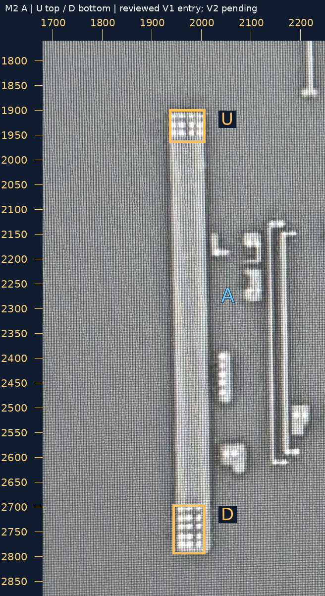
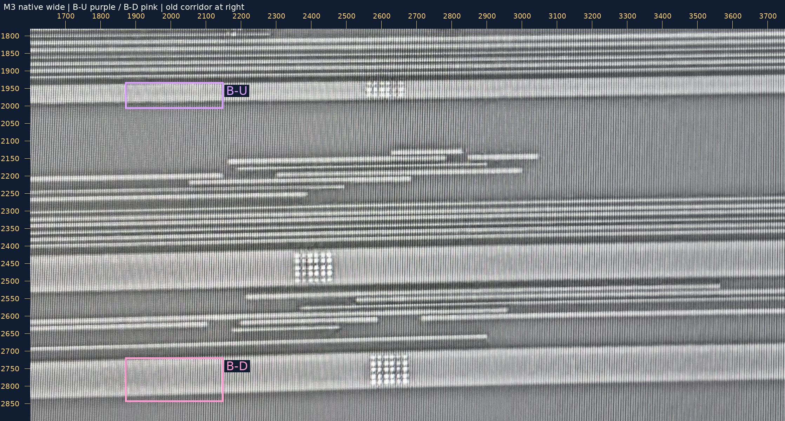
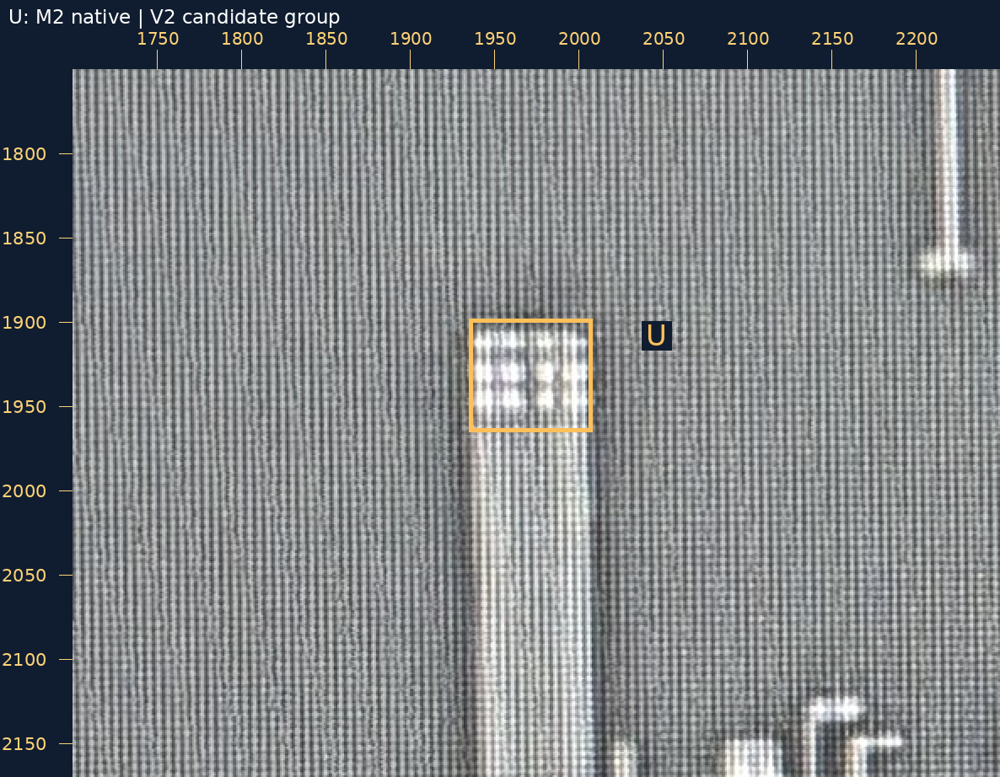
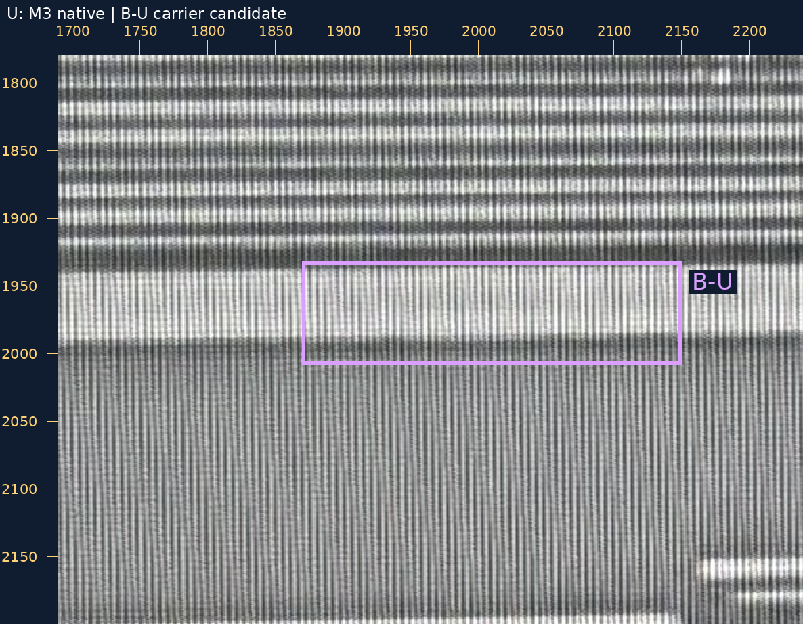
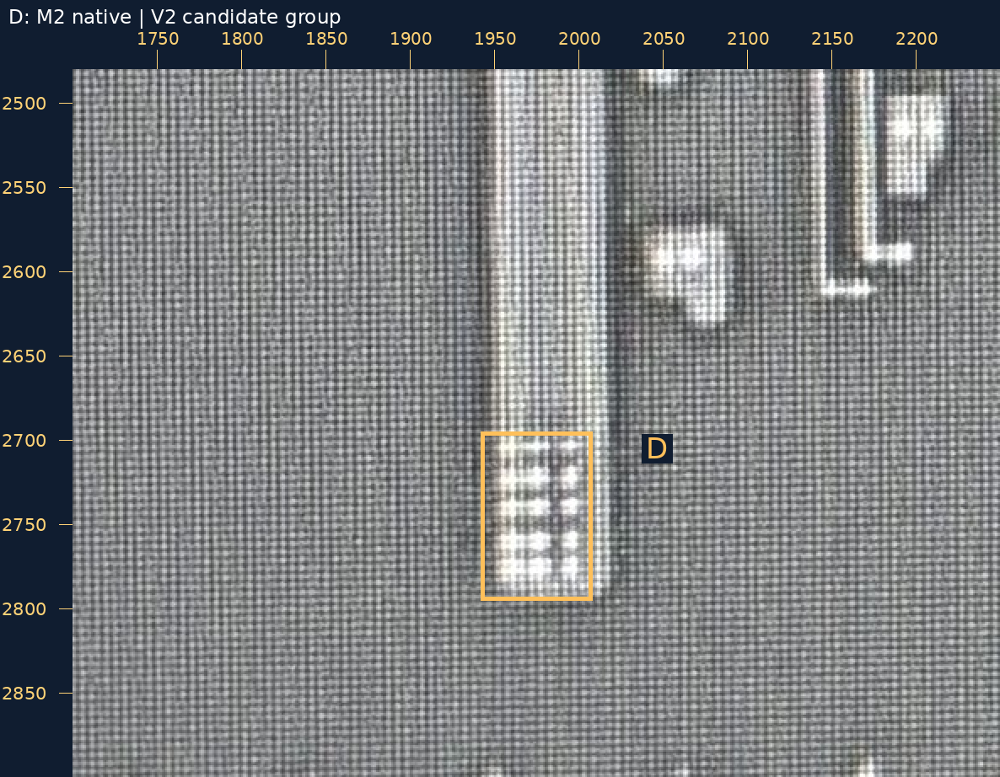
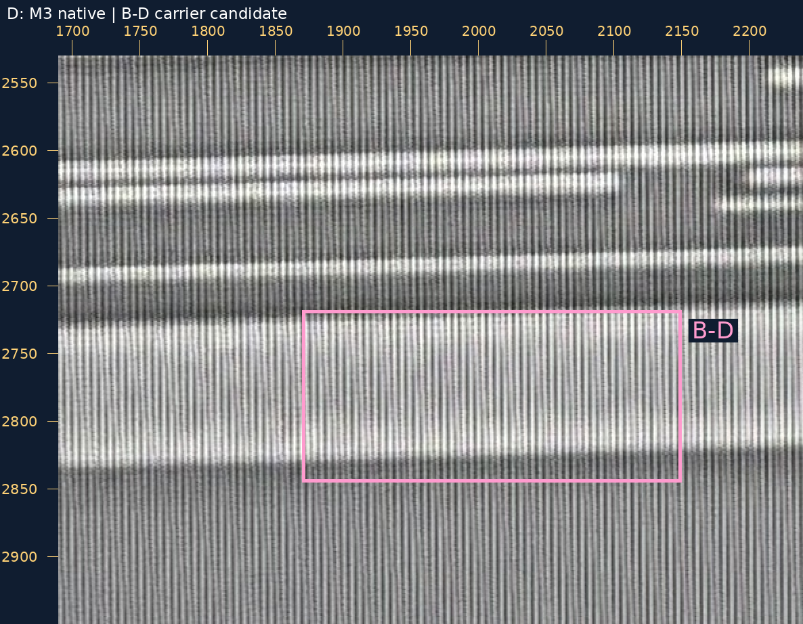

2026-10-29 · 新的跨层来源裁决 · 不重审既有接口
你的原话：“Q1：是 V1，接 A”。已单独保存身份与承载裁决，孔数、精密几何未随之批准。
沿 M2 A 向上检查至可见上端，并复查下端：A 是连续宽竖段，U、D 各有孔组。右侧小孔列另属独立 M2；中部 M3 交叉不自动连接。M3 上、下宽带在原图中可继续追到旧走廊对应 B-U／B-D。
现有工作几何仍为 34 金属、11 已审接口、46 设计孔；本次 Q1 是额外保存的第 12 条来源接口事实，尚未压入旧走廊的工作坐标。不会为了显示它而平移、缩放旧对象。
| 位置 | 新问题 | 大邻域图 |
|---|---|---|
| U：上端 | M2 A 上端 U 孔组是否为 V2，并接到 M3 的紫色上方 B-U（RT-M3-UP）宽母线？只判身份及承载，孔数保持未知。 | M2／M3 并排大图 |
| D：下端 | M2 A 下端 D 孔组是否为 V2，并接到 M3 的粉色下方 B-D（RT-M3-DOWN）宽母线？只判身份及承载，孔数保持未知。 | M2／M3 并排大图 |
可回复“U、D 身份与承载均正确”，或逐项指出修改。不要求数孔；不重问 Q1 的 V1。
这两项会新增 M2→M3 连接，需要新裁决。M3 自身的大孔阵列不作为 V2 身份证据；彩框是本层搜索范围，不是投影后的孔落点。尚未声称整组精密包围通过。
本层原生范围 [1680, 1760, 2250, 2880]；1×整数放大。两层各用自己的原始坐标尺，未相互投影。
原图 · 大图
本层原生范围 [1600, 1780, 3750, 2900]；1×整数放大。两层各用自己的原始坐标尺，未相互投影。
原图 · 大图
本层原生范围 [1700, 1750, 2250, 2170]；2×整数放大。两层各用自己的原始坐标尺，未相互投影。
原图 · 大图
本层原生范围 [1690, 1780, 2240, 2200]；2×整数放大。两层各用自己的原始坐标尺，未相互投影。
原图 · 大图
本层原生范围 [1700, 2480, 2250, 2900]；2×整数放大。两层各用自己的原始坐标尺，未相互投影。
原图 · 大图
本层原生范围 [1690, 2530, 2240, 2950]；2×整数放大。两层各用自己的原始坐标尺，未相互投影。
原图 · 大图